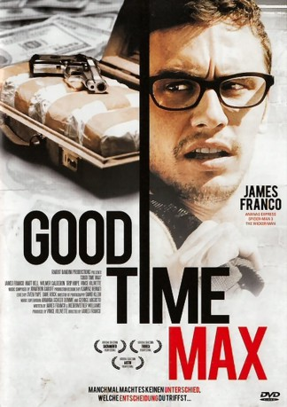

#8777 Good Time Max
Alternativ: Brother Apocalypse (Originaltitel)
 
 IMDB-Wertung: 6.2 / 10
IMDB-Wertung: 6.2 / 10  Metascore: 0
Metascore: 0 
Die Brüder Max und Adam sind hochbegabt. Doch während Adam sich gute Noten erarbeiten muss und in der Folge Disziplin lernt, fällt dem genialen Max alles wie von selbst zu, was ihn sorglos, gleichgültig und anfällig für fatale Versuchungen werden lässt. Während Adam Medizin studiert, eine Familie gründet und zum Chirurgen wird, schmeißt Max das Studium, findet Geschmack an Drogen und lässt sich auf krumme Geschäfte ein. Versuche der Annäherung zwischen den Brüdern scheitern wiederholt. Doch dann gerät zur Abwechslung Adam in Schwierigkeiten.
Jahr: 2007
Dauer: 80 Minuten
FSK: 16
Land: USA Studio: IFC FilmsTonspuren: DTS - ,
Untertitel: Deutsch,
Auflösung: 1080p (1920x816) Größe: 7659 MB
Genre: Drama
Regisseur:  James Franco
James Franco
Drehbuch: Merriwether Williams
Soundtrack: Jonathan Sadoff
Darsteller:
 James Franco als Max
James Franco als Max- Vince Jolivette als Bruce
 Wilmer Calderon als T-Ray
Wilmer Calderon als T-Ray- Trip Hope als Skeet
 Richard Portnow als Head Administrator
Richard Portnow als Head Administrator- Jarrod Bunch als Doug
- Robyn Cohen als Jo
 Peter Mackenzie als Anesthesiologist
Peter Mackenzie als Anesthesiologist Brian Lally als Lt. Lally / Philosophical Biker
Brian Lally als Lt. Lally / Philosophical Biker- Charity Shea als Big Guy's Girl
 Molly Cheek als Carol
Molly Cheek als Carol- Mark Hapka als Mark
- Bailey Hughes als Young Max
- Tylor Chase als Young Adam
- Ruth Barrie als New York nurse
- Blaine Miller als Artie
- Dana Emberson als Cadaver
- Sarah Blackman als Girl at bar
- Sarah Davidson als Christine
- Jackson Davis als Jeff
- David Garrett als Intern Cohen
- Kelly Knox als Police Officer
 Zak Knutson als Carl
Zak Knutson als Carl- Scott Lincoln als Professor
- Justin Loyal als James
- Judith Moreland als Nurse
 Ahna O'Reilly als Girl Jumping on Bed
Ahna O'Reilly als Girl Jumping on Bed- Jo-Ann Pantoja als Grilfriend
- Emma Prescott als Kallie
- Zhubin Rahbar als Dancing Dude
- Kathleen Randazzo als Mrs. Brown
- Rachel Smart als Trixie
- J.W. Wolterman als Wally
- Mary Payne als Teacher
- Madalyn Lester als Receptionist
- Jack Samet als Rabbi
- Stacey Miller als Janet
- Pamela Rooney als Birthday Girl
- Marnie Shelton als Terry
- Dan Mooney als Van
- Slammer als Burley Guy
- Sydney DeMarco als Natalie
- Amber Dolle als Beach girl
- Aja Evans als Eleanor
- Jason J. Gates als Doctors Assistant
- Thor Gold als Office Worker
- Karl Edvard Groundstroem als Extra (surfer)
- Jason Jensen als Med Student
- Jeffrey Scott Jensen als Prison Guard
- David Markey als Bob
Datei: X:\2007(G-M)\Good Time Max (2007, FSK16, 1920x816).mkv seit 30.04.2018
Festplatte: HD 2007(A-Z)-2008(A-F)
 Es gibt insgesamt 64 Filme in der Gruppe '2007(G-M)'
Es gibt insgesamt 64 Filme in der Gruppe '2007(G-M)'